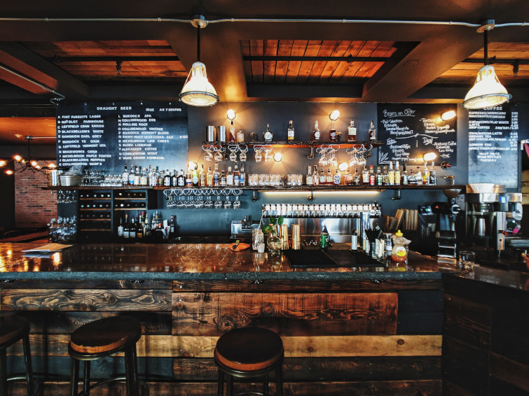

About Us
There is nothing cut out about Retro giving a Unique Food Ordering Experience. Not our pizzas. Not our kin and our sandwiches. Also unquestionably not the manner in which we live. Around here we do not make do with anything short of food we are glad to serve. Furthermore we do not simply check-in.
Not when we can likewise turn into our best make companions and have some good times while we are grinding away. We are the fast food organization that lives unpacked.
We have in excess of 16000 eateries and 350000 colleagues in excess of 100 nations. Regardless of whether it is the first Stuffed Crust or just baking a cookie with your coffee in space we drive constantly ourselves to convey hot food, fast every time anyplace you need to appreciate it.
About Retro - Food Ordering Website
The Retro - Food Ordering Webite is build using HTML, CSS, Bootstrap, Javascript. The Main Developer is Haraksh Singh, Roll No. 2110990541. The Co-Developer is Harshpreet Singh, Roll No. 2110990594 of Group OG12, TEAM F.